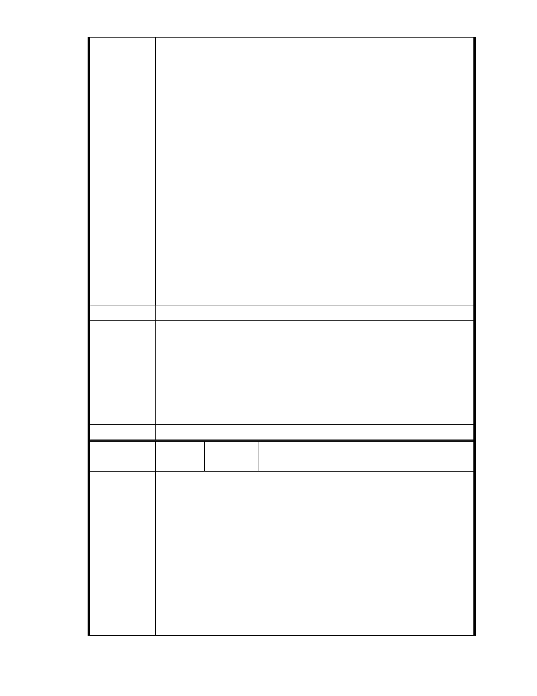

甦甚且比土地開發還重要一些。（詳 960614 第一次討論會議紀錄）
五、台北市政府發展局
因於保護區尋覓可建築用地非本府（台北市政府）政策，故發展局不擬
進行保護區通盤檢討（詳 960614 第一次討論會議紀錄）。
六、張委員樞
本案所規劃社會福利設施依現行土地使用分區管制規則，在原分區保護
區內即可設置而無庸辦理變更，建議規劃單位在量體配置上酌減後即可
滿足原法規之需求，此亦或為本案解套之方法（詳 951204 第七次專案小
組審查會議紀錄）。
林委員聖忠（鍾弘遠代）
不宜變更坡地他用。（詳 951011 第六次專案小組審查會議紀錄）
陳情意見：
依據臺北市土地使用分區管制規則第 75 條第 1 項第 2 款規定，保護區依
法得附條件允作為社會福利設施使用，無須辦理都市計畫保護區變更。
且基地位處環境敏感地區，為區域性集水區之主要排水流路，故本案無
論是否為早已經整地變更地貌，就整體區位而言，均仍屬不適宜變更保
護區。
建議辦法
一、本案申請範圍於慈濟購得前已遭非法填土，實不具保護區之功能，
今申請單位欲興辦社會福利事業，故依法辦理都市計畫變程序；目
市府說明
前申請方案較先前方案已大幅降低開發強度、調整使用項目並承諾
大面積滯洪設施等回饋事項，顯示申請單位欲改善現況之誠意。
二、相關陳情意見將納入本案審查人民意見，依法定程序辦理。
三、後續審理程序將要求申請人加強與在地區民、社會大眾，就基地現
況、規劃方案及環境助益作為等方面加強溝通。
委 員 會 決 議 同編號 1。
編號
陳情理由
孫文郁（99.12.2 於本會網站傳送資料、市長信
59
陳情人
箱（ MA201012030022 ））
陳情案名：
「變更台北市內湖區成功路 5 段大湖公園北側部份保護區及道路用地為
社會福利特定專用區主要計劃案」及「擬定台北市內湖區成功路 5 段大
湖公園北側社會福利特定專用區細部計劃案」
事實：
一、本案主管機關為台北市政府社會局
依本計畫興辦事業計畫書業已奉內政部 86 年 7 月 24 日台（86）內社字第
8684674 號函原則同意在案，主管機關為台北市政府社會局而非教育局，
本案不屬文教建設之開發。
二、慈濟所有土地達 16 公頃
本案慈濟實際擁有 16 公頃土地，而拿出 4.6 公頃進行變更，是否涉及環
- 53 -